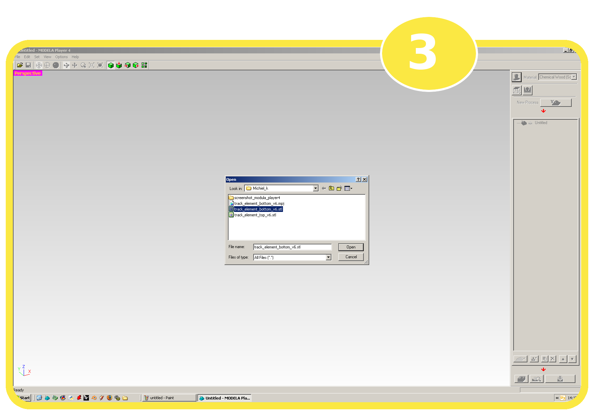
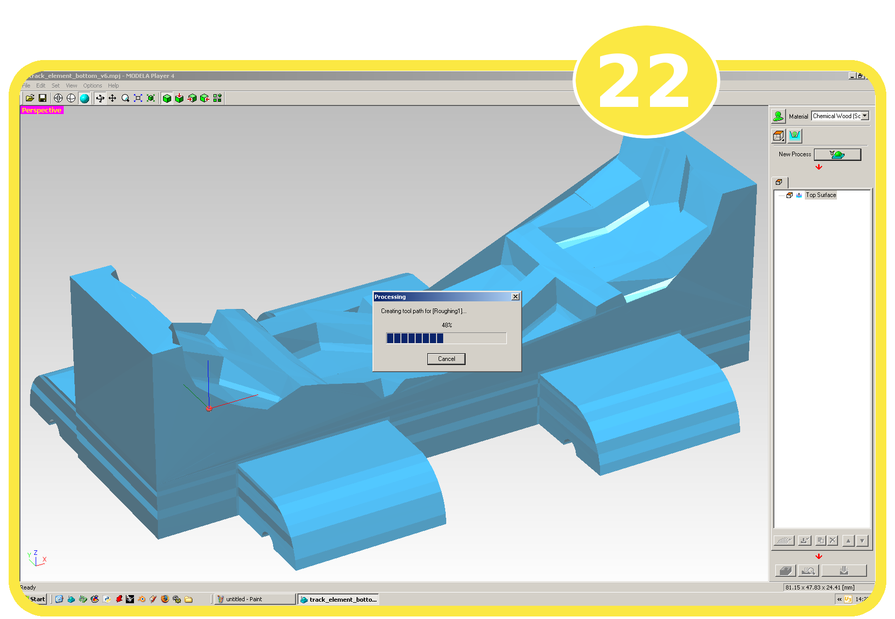
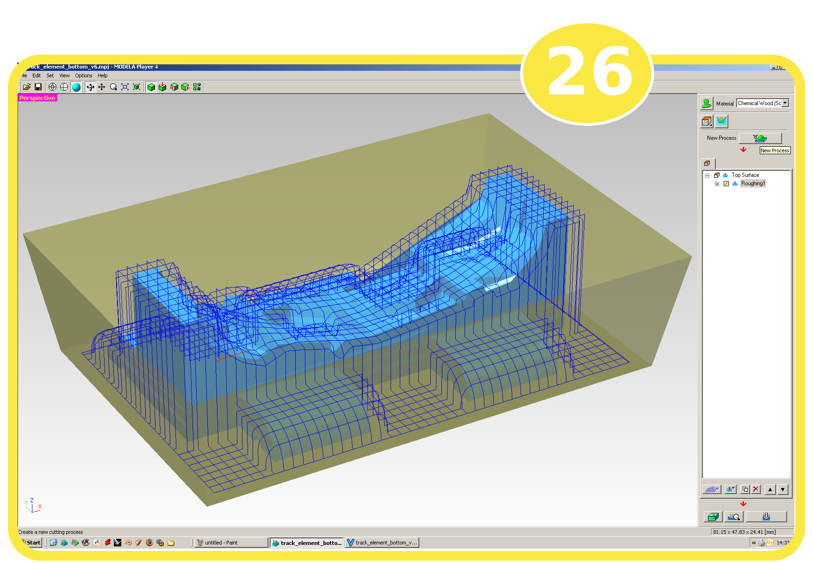

-
Tutorial: Modela Player
In this tutorial we will show how to use Roland Modela Player 4 software to make a 3D object on the Roland Modela MDX-20 scanning and milling machine. More specifically we will set-up the Modula Player 4 software to mill out a mold. This requires that the actual object is caught within 4 sides that have slight slope. This will make it easier to lift the cast object out of the mold.
This tutorial will show you step-by-step in pictures how to setup the software (version 1.99)
More info about the Modela MDX-20 scanning and milling machine on the website of Roland: Modela MDX-20
Summary
Set up Modela Player software to mill out an object (in our case for casting)
We use 3 processing steps: 1 roughing process step and 2 finishing process steps
Note: This second finishing step adds up to the already long processing time. Depending on the material (hence the x- and y-speed) and the size of your object it can take a while. In our example we used chemical wood, and we had 2 finishing processes it took more than 2 complete days!!!!
We setup the design in sloped box (because of our purpose as a mold).
Tutorial in 50 step documented in screen shot images
Step 1: launching the Modela Player 4 program
You can launch MODELA Player 4 software from the task bar, or you can select it from the start button program menu.
Note: Modela Player software is only available for Windows OS'es.
Step 2: Open 3D design file

Goto: File → Open
Step 3: Select the design file (*.stl) and open it.
Browse to your design file and select it to open it.
Note: Besides STL files (*.stl) you can also open DXF formated files (*.dxf) or IGES files (*.igs). Of course you can also open Modela Player project files (*.mpj) or Modela player version 3.x files (*.mdj).
Step 4: Your design will be shown on screen.
Step 5: Select the material from the material pull down menu.
In the top right corner of the program window you can find the material pull down menu. Select the material you are using for the milling. We select chemical wood (soft) as material.
Note: The choice of material determines the speed of the milling tool. The softer the material the speedier the milling tool can move.
Step 6: Set the model parameters
In the top right corner of the program window you can find the green model button. Click it to open the Model window dialog.
In the first tab “Size and Orientation” you can set the scale and orientation. The orientation is an important property. The milling tool can generally only access the material in on direction; the top face of the object in the milling machine. Holes in the bottom and to the side of your object are generally not accessible. Set the orientation such that you can access the important side of your model.
For our example, we have to swap the model up side down to be able to access the model with the milling tool. We will click the bottom box of the six orientation switches. With this choice we have to accept that the shafts (now on the top, and after changing the orientation on the bottom of the object) are not milled out.
Step 7: Set origin of your model
Select the “Origin” tab of the model window dialog. Here you can set the origin of your model. The top left front corner is default and is convenient to align with the Modela mill machine platform. So we keep it unchanged.
Step 8: Notice the orientation of your model has now changed!
The model is swapped up side down now after changing the orientation in the step 6.

Step 9: Click the “Modeling Form” button
Click on the “Modeling Form” button on the top right side of the window. The button is blueish, and most on the right in the second row (under the word “material” of the material pull down menu).
In the “Margin” tab of the “Modeling Form” window you can set the margin around your model. We leave it to the automatic setting of 6.5mm.
Step 10: Click the “Depth” tab of the “Modeling Form” window
In the second tab, “Depth”, you can set how deep the milling tool has to cut. For this example we want the whole model to be cut out. We leave it to default setting to cut out the whole depth.
Step 11: Click the “Slope” tab of the “Modeling Form” window
In the third tab, “Slope”, you can set a slope around the model. This is convenient for our purpose as our model will be a mold for casting the final product. For this example we select “make sloped” and leave the default angle to 10°.
Step 12: Click the “Cutting Area” tab of the “Modeling Form” window
In the fourth tab, “Cutting Area”, you see the size of your cutting area. We use this information to determine how big the surface of the material needs to be. You need to take into account that you have enough margin on your material to save your sloped sides.

Step 13: Click the “View” menu and select “rendering” option
Step 14: Your model now shows as solid object.
Setting the view mode from “Wire Frame” to “Rendering” switches your model to show as a solid object.
Step 15: Click the “New Process” button
We are now going to set up the milling process for our model. We can 'program' the Roland Milling machine to mill out our model in different processes. We generally use a “Roughing” and a “Finishing” process. The roughing process is used to mill out the rough shape of the model. The finishing process is used to create a more smooth finish.
The “New Process” button can be found on the right side of the window in the third 'row'. After clicking the “New Process” button, the “New Process Creation” window is opened. This is a dialog to program the milling processes.
First we start with a roughing process. So, we select the roughing option.
Step 16: Click on the “Next” button of the “New Process Creation” dialog window
In this sub-window we can select the cutting surface. Since we have only one cutting surface, we have only one option: “+Z”. It signifies we are going to cut from the top surface, exactly as the Roland Milling tool operates.
Step 17: Click on the “Next” button of the “New Process Creation” dialog window
In this sub-window we can select the tool(blade) to use for this cutting process. For each milling process we can select a different tool. In between the processes the software offers to change the tool before it continues.
Note: A difficulty when changing a tool in between two processes is that you will need to zero it again. Therefor, it is wise to have a point of origin that is not cut away. So use enough margin around your sloped sides (or rest material) to be able to zero a tool for a second or third process.
For our example we are going to use a 6mm square tool for the roughing and the first finishing process. After the first finishing process we going to use a second finishing process to refine a limited part of the model.
Step 18: Click on the “Next” button of the “New Process Creation” dialog window
In this sub-window we can set the cutting area and depth. Here we can also choose if we want to cut out the whole model or partial (in depth). We can also limit the area that we want to cut.
For this example we already slit the model in half. So, we need the complete model and not a partial selection.
Step 19: Click on the “Next” button of the “New Process Creation” dialog window
In this sub-window we can set the type of tool path of the cutting process. You can choose between the options:
Scan lines
Unidirectional
Contour lines
Spiral
For this example we choose the option for scan lines in X+Y direction.
Step 20: Click on the “Next” button of the “New Process Creation” dialog window
In this sub-window we can set the cutting parameters like:
X and Y speed
Z speed
Spindle speed
and more...
The parameters are set by default based on the tool (6mm square) and the material (chemical wood) we set in step 5.
Step 21: Click on the “Next” button of the “New Process Creation” dialog window
In this last window of the “New Process Creation” window you can give this process step a name. And you can choose to calculate and create the tool path now or an a later moment.
For this example we choose the default name (“Roughing1”) and to create the tool path immediately.

Step 22: Click on the “Finish” button of the “New Process Creation” dialog window
After clicking the “Finish” button the program starts to calculate the tool path to mill out the model out of the material. After the calculation is finished you can see the “Roughing1” process listed in the process list on the right hand side of the screen.
Step 23: Click the “Create tool path” button
The “Create Tool Path” button is the first button on the left below the processes list.
After clicking the “Create tool path” button the program starts to calculate the tool path to mill out the model out of the material. When the calculation is finished the tool path is shown on the model.
Step 24: Click the “Preview Cutting” button
Step 25: View the “Preview Cutting” window
After clicking the “Preview Cutting” button a new window pops up and shows an example of the milled out product.
In the preview window you can look at forecast of how the milled out model will look. In the view menu of the “Preview Cutting” window you can select “wire frame” view or “rendered” view. See an example in the image below.

Step 26: Press the “New Process” button
To add a finishing step to the milling process, press the “New Process” button.
Step 27: Select “Finishing”
From the “New Process Creation” wizard window, select the “Finishing” option
Step 28 to 32: follow steps 16 to 20
The next steps (28 to 32) for setting up the finishing process are similar to setup the roughing process . So see steps 16 to 20 before proceeding with step 33.
Step 33: Click on the “Next” button of the “New Process Creation” dialog window
In this last window of the “New Process Creation” window you can give this process step a name. And you can choose to calculate and create the tool path now or an a later moment.
For this example we choose the default name (“Finishing1”) and to create the tool path immediately.
Click on the “Finish” button of the “New Process Creation” dialog window
After clicking the “Finish” button the program starts to calculate the tool path to mill out the model out of the material. After the calculation is finished you can see the “Finishing1” process listed (see image step 34) in the process list on the right hand side of the screen.
Step 34: Press the “New Process” button
To add a second finishing step to the milling process, press the “New Process” button.
Note: See the high density of lines that represent the tool path in the wire frame view.
Note: This second finishing step adds up to the already long processing time. Depending on the material (hence the x- and y-speed) and the size of your object it can take a while. In our example we used chemical wood, and we had 2 finishing processes it took more than 2 complete days!!!!
Step 35 : See step 27
Step 36 : See step 16
Step 37 : Click on the “Next” button of the “New Process Creation” dialog window
In this sub-window we can select the tool(blade) to use for this cutting process. For each milling process we can select a different tool. In between the processes the software offers to change the tool before it continues.
For our example we are going to use a 3mm square tool for the second finishing process.
Note: A difficulty when changing a tool in between two processes is that you will need to zero it again. Therefor, it is wise to have a point of origin that is not cut away. So use enough margin around your sloped sides (or rest material) to be able to zero a tool for a second or third process.
Step 38: Click on the “Next” button of the “New Process Creation” dialog window
In this sub-window we can set the cutting area and depth. Here we can also choose if we want to cut out the whole model or partial (in depth). We can also limit the area that we want to cut.
For this example we are going for a partial setup for the finishing2 process step. This is because we use a 3mm milling tool that has 20mm length. We want to limit the tool path to an area where we know the depth is not exceeding 20mm. We have chosen to set an area that needs the most details and ignore the part where we could not reach with a 20mm tool length.
Use the mouse to drag the corners of the red rectangle box to set the area.
Step 39: Click the right most button under cutting area preview.
This will display a side view of your object. Similar to the previous step where we limited the cutting area from the top view, we can limit here the cutting depth. Use the mouse to drag the corners of the red rectangle box to set the area.
Step 40: Use the magnifying glass to zoom in and out to set the borders more precise.
Step 41: follow step 19.
Step 42: Click on the “Next” button of the “New Process Creation” dialog window
In this sub-window we can set the cutting parameters like:
X and Y speed
Z speed
Spindle speed
and more...
The parameters are set by default based on the material (chemical wood) and tool (3mm square). We choose the default values.
Step 43: Click on the “Next” button of the “New Process Creation” dialog window
In this last window of the “New Process Creation” window you can give this process step a name. And you can choose to calculate and create the tool path now or an a later moment.
For this example we choose the default name (“Finishing2”) and to create the tool path immediately.
Step 44: Click on the “Finish” button of the “New Process Creation” dialog window
After clicking the “Finish” button the program starts to calculate the tool path to mill out the model out of the material. After the calculation is finished, a “Finishing2” process is added to the process list on the right hand side of the screen.
Step 45: Click on the “Cutting-position setup”
The “Cutting-position setup” is located on the left of the bottom row of button under the process list.
In the dialog window that opens you can setup where the tool is going to cut in the material that you put into the milling machine. This window is also used to move the tool to the reference point. This is the zero point where the tool starts milling.
Note: If you use a “sloped” design be aware that you need take extra space on your material and that you need to set it up properly in this “Cutting-position” setup dialog. It is the grey blue colored area in the preview window.
Note: Attach your material with double sided tape to the table of the milling machine and make sure the reference point is set well.
Step 46: When material is setup well on the machine, click the “Cut” button
The “Cut” is located on the right of the bottom row of button under the process list.
When everything is ready and the material is well attached to the machine, and the tool is “zeroed” to the reference point, we can start the cutting by pressing the cut button.
Note: The Roland Modela milling machine has to be out of view mode to do the zeroing and the cutting!
Step 47: Confirm the start of the cutting process by clicking “OK” in the cut dialog that pops up.

Step 48: The machine is running! (if all went well?!)
In the “output in progress” dialog box the status can be read of the milling process. You can also notice that a tool change is required in between the finishing1 and the finishing2 process step.
Step 49: Change of the milling tool
When the machine has come to a halt after finishing1 process step, you can change the tool.
Note: A difficulty when changing a tool in between two processes is that you will need to zero it again. Therefor, it is wise to have a point of origin that is not cut away. So use enough margin around your sloped sides (or rest material) to be able to zero a tool for a second or third process.
Step 50: Ready!?
Enjoy the result in the milling machine.
back |